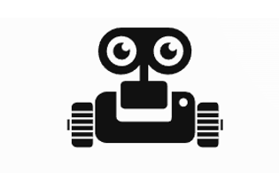
AGROBOT
O trabalho desenvolvido permitiu-nos criar o protótipo de um robot direcionado para aplicações na área da agricultura.
Os projetos de maior dimensão, levados desde o conceito ao protótipo funcional.

O trabalho desenvolvido permitiu-nos criar o protótipo de um robot direcionado para aplicações na área da agricultura.
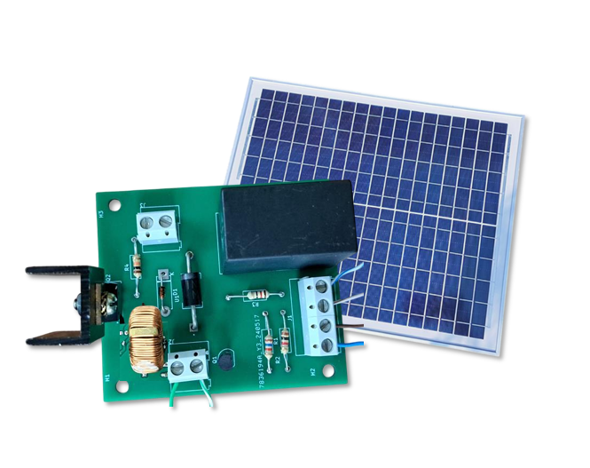
O objetivo do projeto é desenvolver um conversor CC–CC do tipo Boost, de modo a atuar como MPPT de um painel solar.
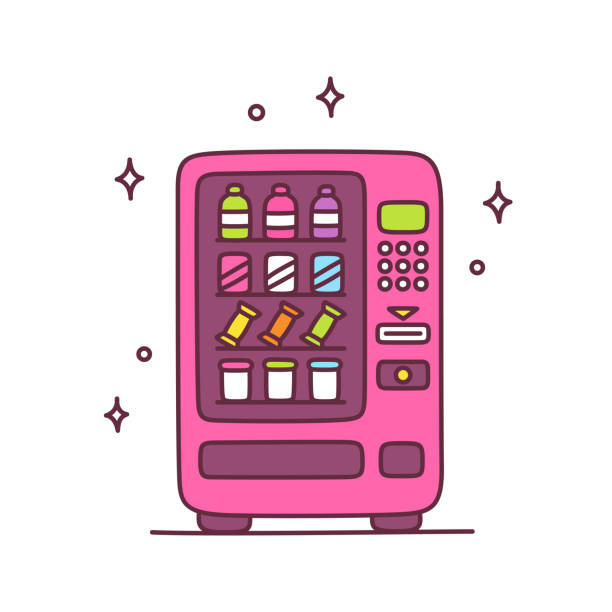
Este projeto teve como objetivo a simulação de uma máquina de venda automática, com foco no desenvolvimento da lógica de funcionamento e no controlo sequencial das operações associadas ao processo de venda. O trabalho não contemplou a construção física do sistema, incidindo exclusivamente na sua modelação em ambiente de simulação.
Primeiros projetos de programação e eletrónica.
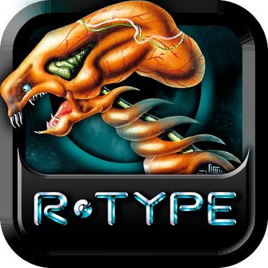
O objetivo fundamental do jogo consiste em pilotar uma nave de combate através de várias fases de progressão lateral, eliminando as forças inimigas até destruir o núcleo da base final. O progresso é linear e exige a superação de cenários com níveis de dificuldade crescentes.
Programação, eletrónica de potência, redes e eletrotecnia.
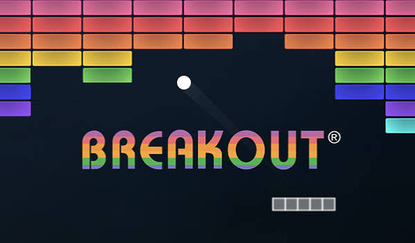
O objetivo principal do jogo Breakout é limpar completamente o ecrã, destruindo todas as linhas de tijolos sem deixar a bola cair uma única vez.
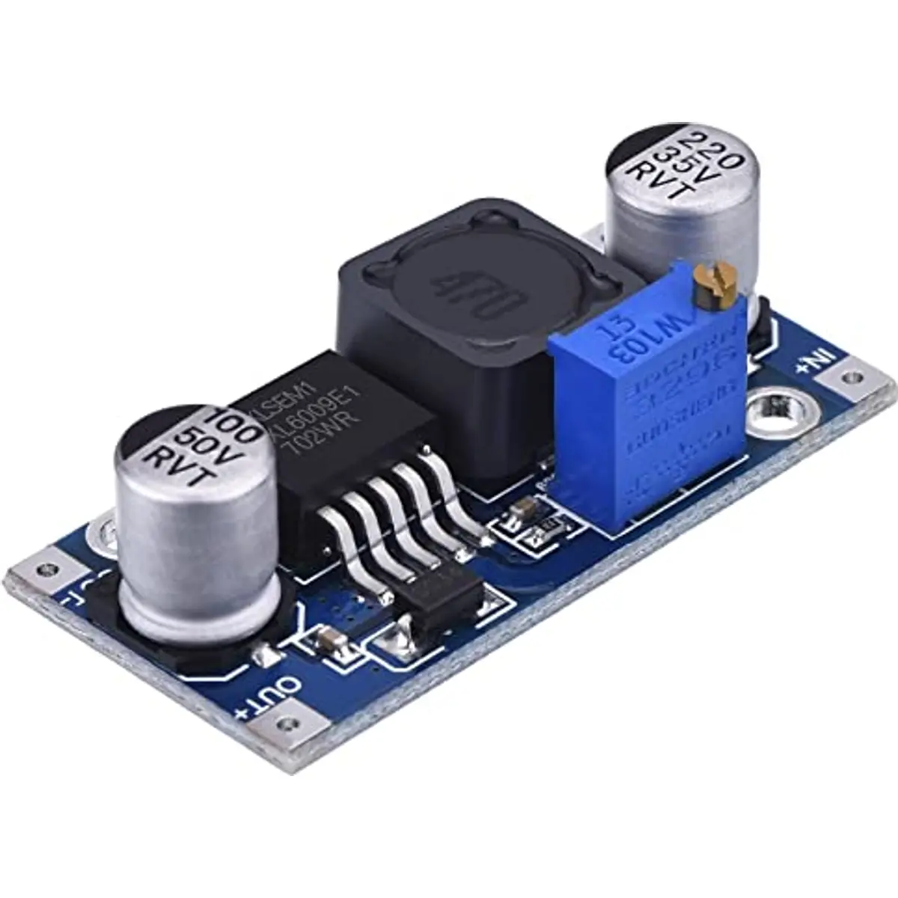
Trata-se de um projeto de conceção e simulação de um conversor CC-CC Boost, utilizando o PSIM para validação do circuito e o KiCad para o desenvolvimento da respetiva PCB.
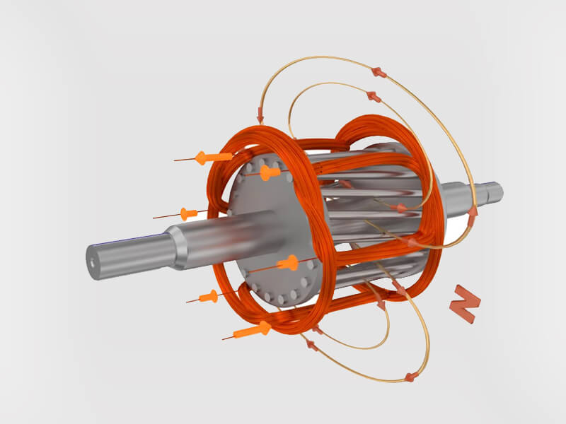
O projeto está focado na análise, modelação e controlo de um motor elétrico CC, incluindo o estudo do seu funcionamento. O projeto integrou ainda experiências laboratoriais, explorando circuitos de comando, proteção e acionamento de motores elétricos.
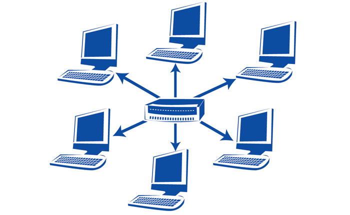
Neste trabalho prático, foi implementada uma LAN local e a sua interligação, com o auxílio do emulador de redes CORE (Common Open Research Emulator). Com a interface gráfica do CORE, foi possível esquematizar as topologias de rede e configurar as ligações e os endereços. Foram ainda utilizados o ping e o Wireshark, recorrendo a protocolos como ARP, ICMP, DHCP, IP/TCP e HTTP.
O trabalho foi realizado com o intuito de consciencializar a comunidade sobre alguns problemas gerais, aprofundando o tema da educação para a paz.
Sistemas embebidos, máquinas elétricas e energia.
O trabalho desenvolvido permitiu-nos criar o protótipo de um robot direcionado para aplicações na área da agricultura.
Este projeto teve como objetivo a simulação de uma máquina de venda automática, com foco no desenvolvimento da lógica de funcionamento e no controlo sequencial das operações associadas ao processo de venda. O trabalho não contemplou a construção física do sistema, incidindo exclusivamente na sua modelação em ambiente de simulação.
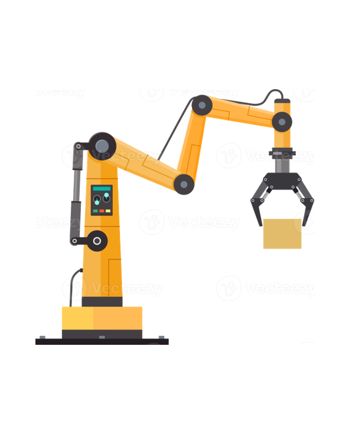
Pretendia-se fazer o comando/controlo de uma linha de montagem de centralinas simulando um ambiente de Automaçõa Industrial.
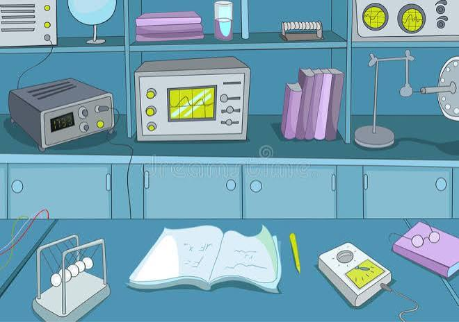
Relatório dos ensaios realizados em laboratório: transformadores (ensaios em vazio, curto-circuito e polaridade), máquina de corrente contínua, motor síncrono trifásico, motor de indução e arranque estrela-triângulo. Incluiu montagens, medições e análise de resultados obtidos.
O objetivo do projeto é desenvolver um conversor CC–CC do tipo Boost, de modo a atuar como MPPT de um painel solar.
Trabalho prático continuado ao longo do curso.
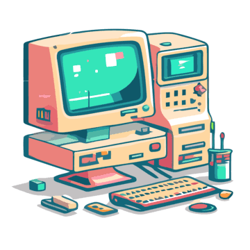
Ao longo das unidades curriculares de ATC I, ATC II e Microcontroladores, foram realizados guias práticos, desenvolvidos em C, C++ e Assembly que abordaram conceitos como programação orientada a objetos, comunicação série, interrupções, PWM, interfaces homem-máquina (HMI), gestão de memória e interação com periféricos, permitindo consolidar competências na programação de sistemas embebidos e no desenvolvimento de software.